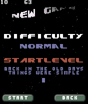
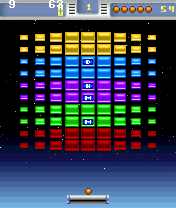
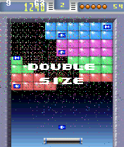

|
 |  |  |
| Title screen | Game Options | First Level | Third Level |
In general all Series 60 phones are supported. There are, however, certain issues with some phones. The Siemens SX-1 will play the sound delayed. The Nokia 7650 might cause trouble when you try to install the game because of the installed game's size of about 500 KB.
After downloading the game .SIS file from this site, transfer it to your phone via Bluetooth or Email. The automatic installation feature of your phone should then guide you through the installation process. Make sure you install it to your memory card - if your phone has one :)
Left softkey for selection
Right softkey for cancel/back or (un)pausing the game
* key for releasing and catching the ball
Stick / cursor pad for moving the bat
In the title screen press left softkey to see main menu. Select "New Game". Select difficulty and start level. (Available number of levels depends on installed level set.) Press left softkey again to start the game.
Press * key in Get Ready screen to start playing the next level. Use left/right to control the bat and use the * key to release the ball. Try using left/right together with * key to give the ball some more speed and control its direction.
Make sure you hit the ball before it leaves the bottom boundary of the screen. If you don't catch the ball, it is lost and you will have to continue the level with the next ball - if you still have one left..
When you're not holding the ball, you can use the * key to activate the tractor beam of the bat. Then you can catch the ball and keep it glued to the bat until you release the * key. Using this technique you can also save a ball that is about to be lost..
Save and reload hiscore
Add result to hiscore
Skin/levelset changer
Skin/levelset downloader
Add more background styles
Add brick hit modes
Add more extras
When in Double Size mode, the bat sometimes reflects the ball in a wrong angle
Sometimes the game jumps to hyperspeed for half a second
New background styles added (gradient, tiled, scrolling, color,..)
Initial release on www.intensicode.de
Adapted GLED level editor
Complete rework of the BreakOut Game Demo hosted on The.Berlin.Factor
Adapted to use the Game.Engine.Dll hosted on The.Berlin.Factor
:: 2004-06-28 :: BreakOut SIS for Series 60 (300 KB) ::
:: 2004-06-20 :: BreakOut SIS for Series 60 (270 KB) ::
:: Level Editor for BreakOut Level Data ::
{kind=link}
{kind=link}
{kind=link}